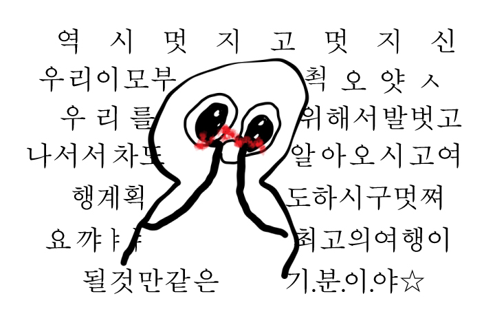
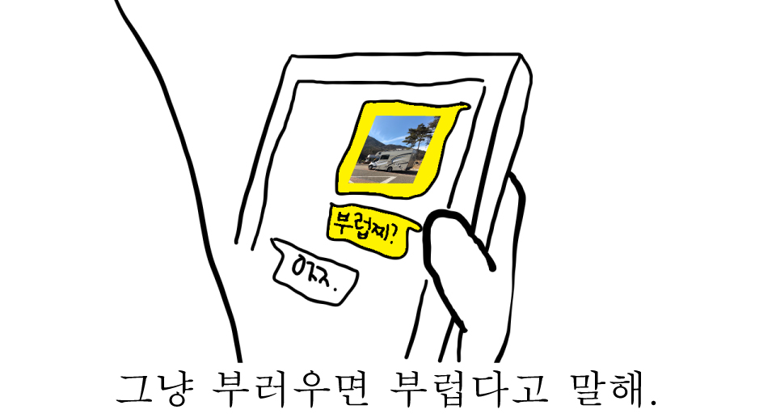

새해맞이 겸 엄마아빠오빠나이모이모부사촌언니사촌오빠 다함께 여행을 갔다. 무려!!! 캠핑카 여행!!!
이모부가 빌려왔다고 칭찬해달라구 자랑을 자랑을 하셨는데 정말 좋았다.
너무 설레서 친구들한테 사진 보내면서 자랑했다 ㅋ
단점은 씻는게 불편하다는 점. 캠핑카를 주차할 수 있는 곳이 따로 있어서 검색해보고 알아가야한다. 그곳에 주차하면 주변에 공용화장실이있어서 샤워는 못하지만 간단한 세수랑 양치는 가능하다. 저녁에 대충 씻고 다음날 아침 온천에 가서 씻었다.
역시 여행은 뭐니뭐니해도 맛잇는 거 먹는거지.바다 앞에 차를 주차해놓고 바베큐세트를 꺼내서 삼겹살, 가리비, 굴 구이를 해먹었다. 이모부가 외국갔다가 사오신 와인을 꺼내서 다 같이 마셨다.물론 나는 빼고ㅠ 하필 몇일전에 꼬매는 수술을 해서 음주금지였기 때무네,,엉엉 그래도 굴 구이가 맛있어서 봐준다. 하여튼 너무너무 재밌었고 다음에도 또 다같이 새해에 캠핑카 여행하기로 했다.

여행은,,계획대로 되지않는 것,,
처음으로 내가 주도해서 계획을 짜고 여행을 갔다. 예상외의 활동을 많이 했지만ㅎㅎ광안리에 가서 바이킹을 탔다. 중2때는 놀이기구 타기 장인이였는데 성인이 된 이후로 바이킹도 무서워하는 놀이기구 찐따가 되어서 바이킹 울면서 탓다. 그래도 나름 재밌긴햇지만,, <짤 ,내려주세요엉엉엉>
내가 먹보라서 그런가^^ 여행갔던 걸 생각하면 음식 생각밖에 나지 않는다. 부산여행의 하이라이트는 조개구이였다. 캠핑카 여행때는 굴 구이가 맛있었고 조개구이는 딱히 그냥 그랬었는데 이번 여행에서 '암남공원 희자매'라는 맛집검색을 통해 알게 된 조개구이집을 갔는데 이게 바로 조개구이구나를 느끼고 왔다. 무조건 다음에도 부산여행오면 꼭 와야할 음식점으로 점찍었다!!!!<짤 널점찍었다.>
롯데월드하면 교복여행이지. 교복을 별로 입고 싶지 않아하는 친구들에게 나는 교복입을꺼야!!!라고 찡찡대면서 교복을 사수했다. 물론 추워서 롱패딩속에 보이지않았지만...ㅎ <단비짤>
로망의 교복입고 회전목마 앞에서 사진찍기. 사람이 북적거렸다. 그렇다고 이 메인 이벤트를 포기할 수 없지. 한바퀴를 다돌아서 적당히 한산한 자리를 찾아서 사진찍으려고 각잡고 있는 다른 교복친구들과 서로 찍어주기 교환을 걸었다. <짤 교환을 받아들이시겠습니까.>
맘에 들지 않는 사진을 주고받고^^..더 찍고 싶었지만 너무 힘든 관계상 추억만 간직하는걸루 하구 아쉬움을 뒤로한채 롯데월드를 떠났다.